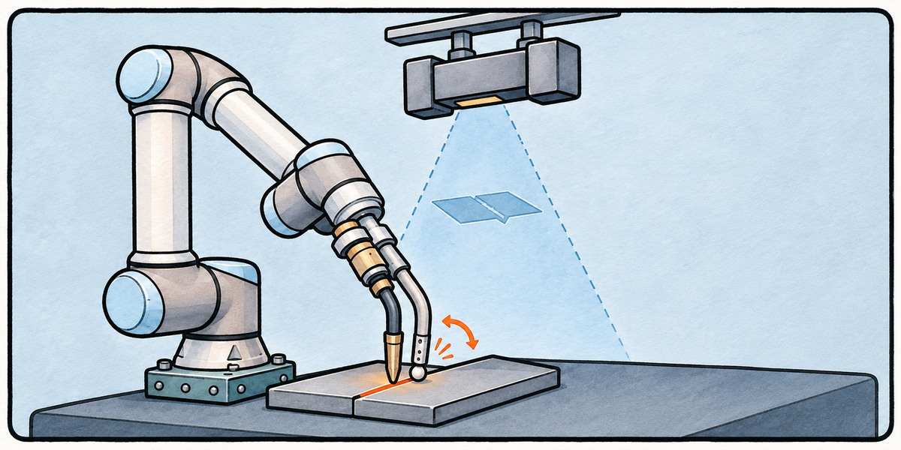
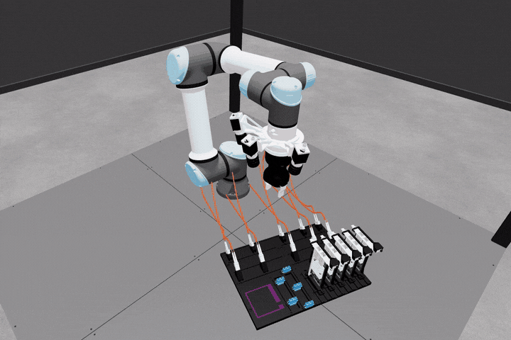
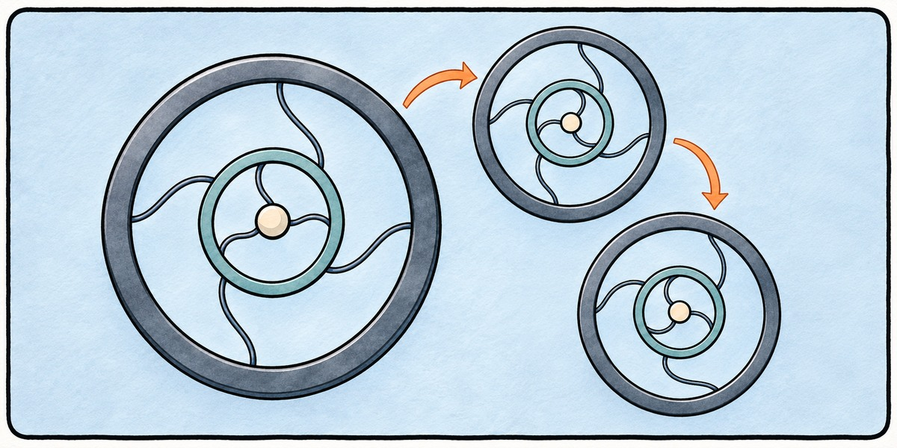

ViSTA: Coarse-to-Fine Visuotactile Deformation Servoing for Online Robotic Weld-Seam Trajectory Adjustment Under Review
Submitted to IEEE Robotics and Automation Letters (RA-L).

Submitted to IEEE Robotics and Automation Letters (RA-L).

Submitted to IEEE Robotics and Automation Practice.

Submitted to Materials & Design.

Submitted to IEEE Robotics and Automation Letters (RA-L).
IEEE Robotics and Automation Letters, vol. 10, no. 8, pp. 8115–8122, 2025.
Biomimetic Intelligence and Robotics, article 100326, 2026, Published online.
2024 6th International Conference on Reconfigurable Mechanisms and Robots (ReMAR), pp. 627–632, 2024.
IEEE Robotics and Automation Letters, vol. 6, no. 3, pp. 5199–5206, 2021.
AI Open, vol. 6, pp. 204–219, 2025.
Mathematical Problems in Engineering, vol. 2021, no. 1, article 9825790, 2021.
IEEE Access, vol. 9, pp. 139958–139967, 2021.
Soft Science, vol. 5, no. 3, article 36, 2025.